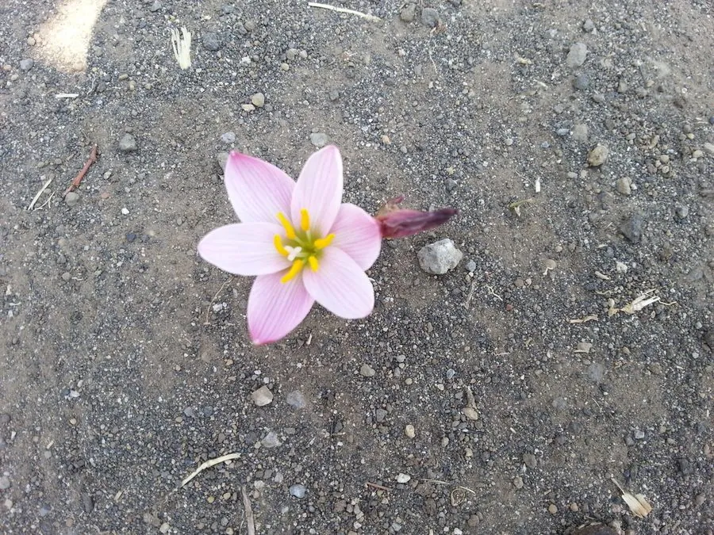

花卉与草本 · 植物界
韭兰 Zephyranthes grandiflora

石蒜科多年生球根草本，叶片似韭、花朵粉红如莲，常在雨后成片开放，是南方花坛与地被的常见植物，原产中美洲。
- 分类
- 门被子植物门纲木兰纲目天门冬目科石蒜科属葱莲属
- 栖息环境
- 中美洲的草原与河岸，喜温暖、阳光充足
- 地理分布
- 原产中美洲，中国南方广泛栽培，长江流域可露地越冬
- 保护级别
- 暂无评估
物种志
韭兰为石蒜科葱莲属多年生球根草本，株高 15–30 厘米，地下具卵形鳞茎。叶片线形，扁平，深绿色，丛生，形似韭菜。花单生花葶顶端，花被片 6 枚，粉红色至玫红色，直径 5–8 厘米，花期 5–9 月；果实为蒴果。
韭兰原产中美洲一带，喜温暖、阳光充足和湿润的环境，耐半阴，在南方可露地越冬。它常在雨后集中开放，因此有“雨百合”之称；花朵粉红娇艳、叶片葱绿，成片种植时如铺了一层粉绿相间的地毯，是花坛镶边、林下地被和庭院点缀的常用材料。韭兰以分球繁殖为主，鳞茎繁殖快，栽培管理粗放，但忌长期积水，是南方庭院常见的低维护地被植物。
形态与习性
- 株高15–30 厘米，叶线形丛生
- 花期5–9 月，雨后集中开放
- 果期花后结蒴果
- 光照喜充足阳光，也耐半阴
- 水分喜湿润，忌长期积水
- 土壤疏松肥沃、排水良好的壤土
- 繁殖以分球繁殖为主
- 主要用途花坛镶边、林下地被、盆栽
趣味知识
- 韭兰叶片扁平似韭菜，花朵粉红，因此得名。
- 它常在雨后集中开放，英文名意为“雨百合”。
- 韭兰靠小鳞茎分球繁殖，繁殖速度快。
- 它忌长期积水，否则鳞茎容易腐烂。